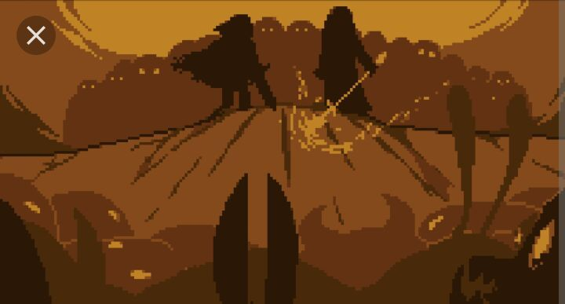
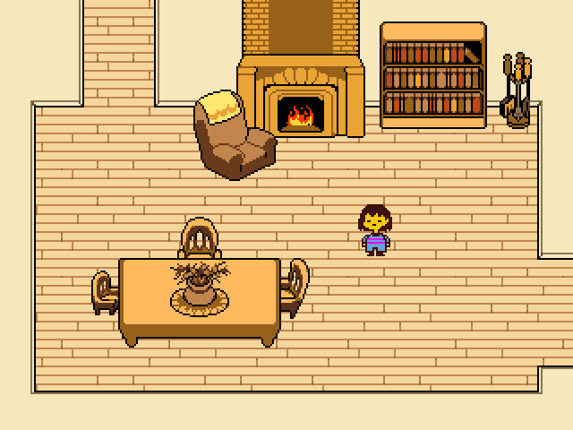
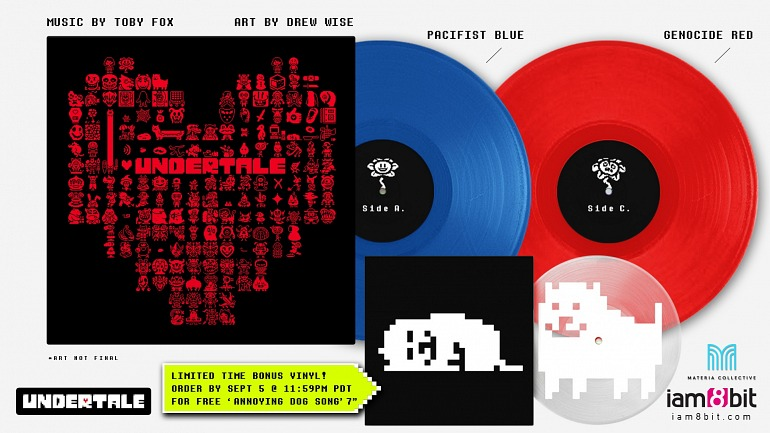
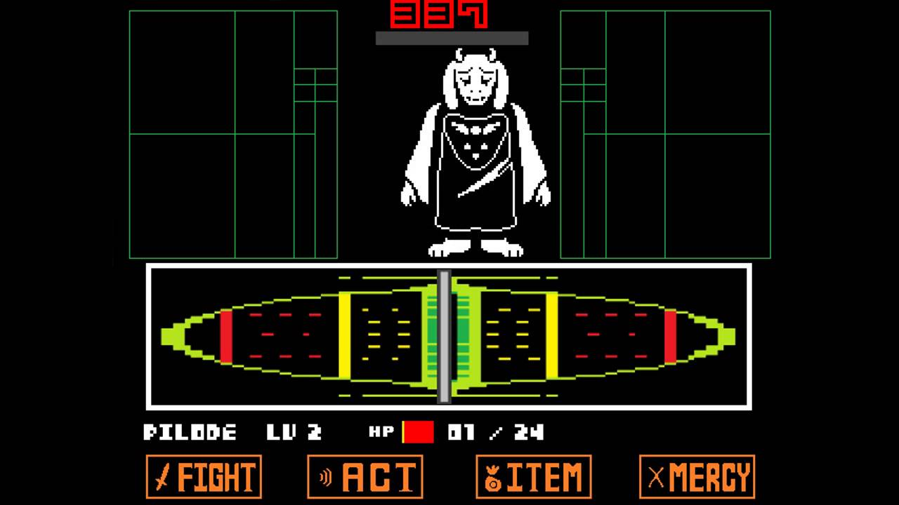

Undertale es un juego de rol independiente que ofrece una experiencia única donde los jugadores exploran un mundo subterráneo habitado por monstruos exiliados. Con un sistema de combate innovador que permite opciones pacíficas y una narrativa cautivadora, el juego destaca por su originalidad, encanto y memorables personajes, creando una experiencia inolvidable para los jugadores.
¿Estás listo para descubrir los secretos que aguardan en las profundidades de Undertale? ¡Únete a nosotros y comienza tu viaje ahora mismo! Tu aventura está a punto de comenzar, y quién sabe qué sorpresas te esperan en cada esquina. ¡No te lo pierdas!
Historia

Hace muchos años, humanos y monstruos coexistían en la superficie en armonía. Sin embargo, esta paz se vio truncada por una guerra devastadora entre ambas razas. Los humanos, temerosos de los poderes mágicos de los monstruos, sellaron a estos últimos bajo tierra con un hechizo poderoso.
Desde entonces, los monstruos han vivido en el mundo subterráneo, una serie de cavernas y pasajes misteriosos. A pesar de su encierro, mantuvieron la esperanza de algún día regresar a la superficie y reconciliarse con los humanos.
El juego se sitúa en este mundo subterráneo, donde los monstruos han establecido una sociedad única. Hay ciudades, pueblos y lugares emblemáticos, cada uno con su propia historia y cultura. Entre los lugares más destacados se encuentra el Reino de los Monstruos, gobernado por el Rey Asgore y la Reina Toriel, y la ciudad de Snowdin, hogar de varios personajes memorables.
A lo largo del juego, los jugadores descubren más sobre el conflicto entre humanos y monstruos, así como sobre los personajes que habitan el mundo subterráneo. Se revelan secretos oscuros, relaciones complejas y dilemas morales que dan profundidad al lore de Undertale.
El corazón de la historia está en las relaciones entre los personajes y las decisiones que los jugadores toman. Cada acción tiene repercusiones en el mundo y en el destino de los personajes, lo que añade capas de complejidad y significado a la narrativa.
Gráficos

Los gráficos de Undertale presentan un estilo único y encantador que evoca la nostalgia de los juegos de 8 y 16 bits, mientras añade su propio toque distintivo. Con un diseño de arte pixelado meticulosamente elaborado, el juego recrea un mundo subterráneo lleno de color y vida. Cada personaje, desde los entrañables monstruos hasta los imponentes jefes, está representado con detalles cariñosos que les dan personalidad y carácter. Los escenarios, que van desde pacíficos pueblos hasta siniestras cavernas, están llenos de pequeños detalles que dan vida al mundo de Undertale.
La simplicidad de los gráficos de Undertale se convierte en su mayor fortaleza, permitiendo que los jugadores se sumerjan completamente en la experiencia del juego sin distracciones innecesarias. A pesar de su estilo pixelado, los gráficos logran transmitir emociones y crear atmósferas cautivadoras. Desde los momentos de ternura y alegría hasta los momentos de tensión y misterio, los gráficos de Undertale son igualmente efectivos en transmitir una amplia gama de emociones y situaciones.
En última instancia, los gráficos de Undertale demuestran que la belleza no siempre está en la complejidad, sino en la habilidad de transmitir una historia y una experiencia de juego de manera efectiva. A través de su estilo único y su atención al detalle, los gráficos de Undertale se convierten en una parte integral de la experiencia del jugador, contribuyendo a hacer de este juego una obra de arte atemporal en el mundo de los videojuegos.
Banda Sonora

La banda sonora de Undertale es una obra maestra musical que complementa perfectamente la experiencia de juego y contribuye en gran medida a la atmósfera única del mundo subterráneo. Compuesta íntegramente por Toby Fox, el creador del juego, la música de Undertale abarca una amplia gama de géneros y estilos, desde melodías alegres y pegadizas hasta piezas emotivas y melancólicas.
Cada canción de la banda sonora de Undertale está cuidadosamente diseñada para reflejar el tono y el ambiente de las diferentes áreas y situaciones del juego. Desde las vibrantes notas de "Megalovania" que acompañan épicas batallas hasta los suaves acordes de "His Theme" que evocan emociones profundas, cada pista está imbuida de significado y emoción.
Lo que hace que la banda sonora de Undertale sea verdaderamente excepcional es su capacidad para contar historias y evocar emociones sin necesidad de diálogo. Cada nota y melodía comunica una parte de la narrativa del juego, llevando a los jugadores en un viaje emocional a través del mundo subterráneo.
La música de Undertale ha trascendido el juego mismo, convirtiéndose en un fenómeno cultural por derecho propio. Ha sido elogiada por críticos y fanáticos por igual, y muchas de sus canciones se han convertido en clásicos instantáneos en la comunidad de juegos. En resumen, la banda sonora de Undertale es un testimonio del talento y la creatividad de Toby Fox, y es una parte integral de lo que hace que este juego sea tan especial y querido por tantos.
Ten un prueba.
Gameplay

El gameplay de Undertale es una experiencia única que desafía las convenciones tradicionales de los juegos de rol. Los jugadores asumen el papel de un niño humano que cae en el mundo subterráneo, donde interactúan con una variedad de personajes, desde amigables monstruos hasta temibles jefes. Lo que distingue a Undertale es su innovador sistema de combate, que ofrece múltiples formas de abordar los encuentros con los enemigos.
En lugar de simplemente atacar a los enemigos, los jugadores tienen la opción de resolver los conflictos de manera pacífica. Pueden optar por hablar con los monstruos, realizar acciones amistosas o mostrar compasión hacia ellos. Estas decisiones afectan directamente el curso de la historia y las relaciones con los personajes del juego. Por otro lado, los jugadores también pueden elegir un enfoque más tradicional y luchar contra los enemigos en batallas de estilo RPG.
Además del combate, Undertale presenta una variedad de rompecabezas y desafíos que requieren ingenio y habilidad para superar. Los jugadores exploran una variedad de entornos, desde pueblos y bosques hasta cuevas y castillos, mientras descubren secretos y desvelan la historia del mundo subterráneo. Con su narrativa envolvente, personajes entrañables y decisiones morales significativas, el gameplay de Undertale ofrece una experiencia de juego única y memorable que desafía las expectativas y deja una impresión duradera en los jugadores.